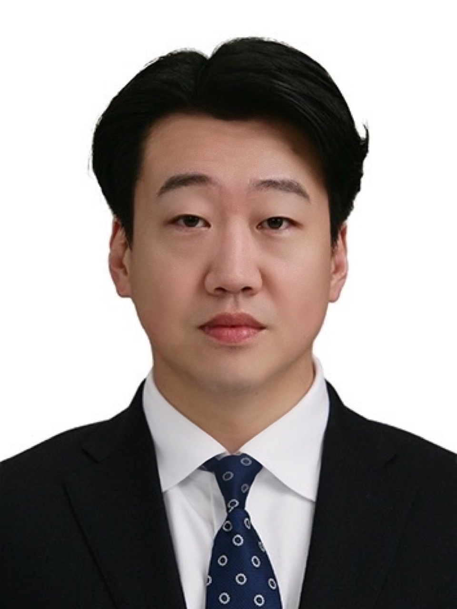

Ryan Kim
Optical R&D Engineer | Principal Researcher

## 💼 Experience
HB TECHNOLOGY
Apr 2025 – Present
Principal Researcher | Advanced Development Team
- Leading advanced technology development for non-destructive inspection in semiconductor back-end processes.
- Developing wave and diffraction optical systems.
- Developing 3D image data processing and analysis algorithms.
YAILE OPTOPIA
Mar 2013 – Jun 2024
Optical Development Team Leader
- Directed geometric optical design and precision optical component design.
- Designed and researched optical systems using Zemax, CODE V, and OSLO.
- Designed vision lenses, including telecentric, line-scan, and hyper-centric lenses.
- Managed the overall design of metrology equipment and high-resolution semiconductor exposure systems using FDTD.
- Designed photomasks using LightTools and developed CMOS sensors through comprehensive research on lithography processes.
- Selected machine vision optical concepts and managed projects for QFN LF and Lead Frame AVI inspection equipment, as well as MLA Lens Array inline automation systems.
## 🎓 Education
Tech University of Korea (TU Korea)
Mar 2022 – Mar 2024
Ph.D. Candidate (Coursework Completed) in Nano-Semiconductor Engineering
- Thesis: Lithography Research for Nanostructure Patterning and Semiconductor Optical Device Application.
- Designed semiconductor optical structures based on FDTD/PWE (Lumerical MEEP, RSoft, etc.).
Tech University of Korea (TU Korea)
Mar 2019 – Mar 2022
M.S. in Nano-Semiconductor Engineering
- Thesis: Study on the Efficiency of Periscope Optical System.
Tech University of Korea (TU Korea)
Mar 2015 – Mar 2019
B.S. in Nano-Optical Engineering